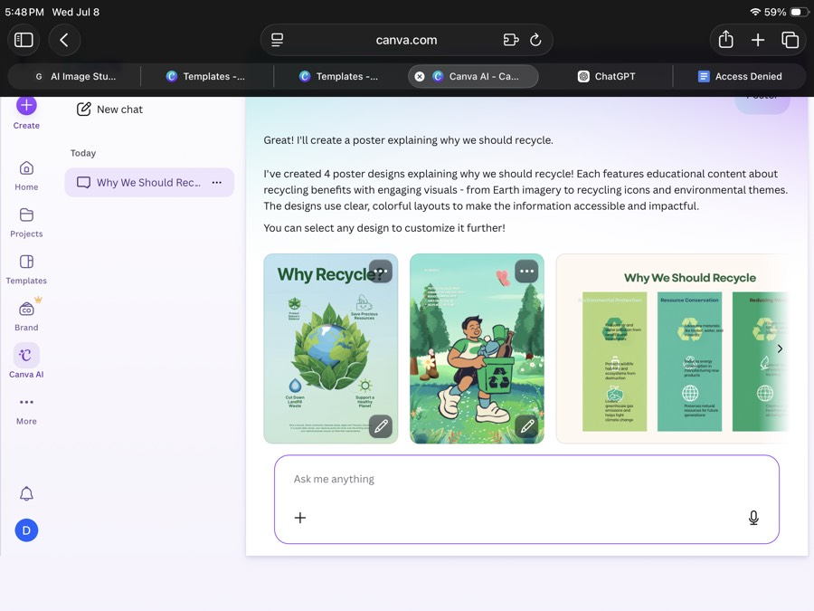

🏁 Welcome to the Media Lab
Today you'll learn how AI creates the media you see every day — and use it to make your own. By the end you will have:
- 🖼️ An AI-generated ad campaign you designed with prompts
- 🎬 A travel video with an AI voiceover, made in CapCut
- 🧠 The skills to spot fakes, out-think the algorithm, and use AI fairly
How today works
- Stations unlock in order — finish the activities in each one to open the next.
- The chips above the green button show what's left in each station.
- When you see a ⏸ CHECKPOINT card, stop — we do that part together on the big screen.
- Stuck? Ask a neighbor first, then raise your hand.
🕵️ Spot the AI
AI can now make videos of real people saying things they never said — and photos of moments that never happened.
Abraham Lincoln's selfie at Gettysburg, 1863. (Cameras that could do this didn't exist. Neither did selfies. Or Twitter.)
CHECKPOINT — Eyes up front
We're watching the deepfake videos together on the big screen. When they end, come back here and try the game below.
🎮 Real or AI? Tap the FAKE.
One of these photos of actress Maggie Smith is AI-generated. Tap the fake one.
Check yourself
Talk about it (with your table)
- What gave the fakes away — or didn't?
- If video can be faked, how should that change what you trust online?
🧠 AI, Decoded
So what actually is AI?
Not hardware. Not just any computer code. The key word is learn — nobody writes rules like "a cat has pointy ears." The AI figures that out itself by studying millions of examples.
🔮 Game 1: Be the AI (predictive text)
This mini-AI learned patterns from example sentences. Tap the word you think comes next — you're doing exactly what AI does. Finish one full sentence.
The AI never "understands" — it just knows which words usually follow other words. ChatGPT works the same way, with trillions of examples.
🤖 Game 2: Train your own AI
Now you supply the training data. Label these 6 messages as SPAM or OK — your labels are the data your AI learns from:
Check yourself
⚖️ AI Ethics: Garbage In, Garbage Out
You just trained an AI with your own labels. Here's the dark side: if the training data is unfair, the AI learns to be unfair — at superhuman speed, and nobody can see it happening.
🎮 You are the hiring AI
A company trained you on the last 8 people they hired. Study your training data:
✅ HIRED: Justin — Mauka High, robotics club
✅ HIRED: Malia — Mauka High, surf team
✅ HIRED: Trevor — Mauka High, robotics club
✅ HIRED: Kainoa — Mauka High, chess club
✅ HIRED: Sarah — Mauka High, robotics club
✅ HIRED: Devin — Makai High, robotics club
✅ HIRED: Ana — Mauka High, math team
Now — thinking only in patterns, like an AI — predict who this company's AI ranks #1:
CHECKPOINT — Ethics videos
We're watching two short videos together: "What is an Ethical AI?" and "What is AI Ethics?" Then discuss with your table:
1. Real AIs have done exactly what you just did — for job applications, loans, even medical care. Whose fault is that: the AI, the data, or the people who deployed it?
2. Should companies be allowed to use AI for decisions about people's lives — hiring, loans, legal judgments — if the AI can't explain how it decides?
Check yourself
✨ Prompt Lab: Build a Campaign
You talk to generative AI with prompts.
Better prompt → better result. Vague in, vague out. Your mission: invent an eco-friendly product and build its ad campaign with AI.
💬 Step 1: Brainstorm with the AI
Chat with Brainstorm Bot to invent your product and slogan. Try a vague prompt first ("give me an idea"), then a specific one ("give me 3 eco-friendly product ideas for surfers under $20") — watch the difference.
Pick your favorite idea and write the product name + slogan + 2 bullet points in Notes.
🧩 Step 2: Build your image prompt
Great image prompts follow a formula: subject + style + lighting + setting. Type your product, tap one chip from each row, and watch your prompt assemble itself:
Generate at least 3 versions — tweak the chips or wording each time. Long-press your best image → Save to Photos.
🎨 Step 3: Design the real ad in Canva
Log in with your project Gmail.
Tap Create → Print → Poster, pick any free template, then Uploads → upload your AI image.
Skip anything with a 👑 crown — those are paid. Free templates and text are all you need.Add your product name, slogan, and bullet points.
Be creative! 🎨 When you're done, show your finished ad to two neighbors — one thing that grabs you, one thing to improve.
🚀 Finished early? Try Canva AI
Tap Canva AI in Canva's left menu and describe your ad — it designs multiple versions from one prompt:

Free accounts get a small number of AI uses. Compare: did the AI's ad beat the one you designed yourself?
Check yourself
📡 The Algorithm Knows You
Why does your TikTok feed feel like it reads your mind? Because an AI curates it.
🎮 Game 1: You are the algorithm
Meet Kai, 15, from Honolulu. Kai's data: watches surf videos to the end, likes food posts, skips dance clips in 2 seconds, follows 3 gaming creators.
Pick the 3 posts you'd put at the top of Kai's feed:
Two kinds of AI
Analytical AI interprets and categorizes existing data — predicting, sorting, recommending.
Your feed is analytical. Brainstorm Bot and AI Image Studio are generative.
🗂 Game 2: Sort it — generative or analytical?
🔬 Game 3: The sentiment machine
Platforms run analytical AI on billions of posts to sort them as positive, negative, or neutral. Type a fake social media post (about food, a game, school lunch, anything) and two AIs will judge it — an old-school word-matcher and a modern neural AI:
The word-matcher only counts scored words — 2005-era tech. The neural AI learned patterns from millions of real posts. Try to fool them: sarcasm, slang, or a complaint with no "bad" words. Which one breaks first?
Check yourself
🎬 Video Studio
The big one: make a travel video with an AI voiceover in CapCut. You're combining everything — generative AI (the voice), curation (picking your best shots), and editing craft.
📸 Step 1 of 11 — Get your photos
Pick a country (or a Hawaiian island). Download 10 photos of it from Unsplash — free, no login.
Long-press each photo → Save to Photos.
✍️ Step 2 of 11 — Write your script
In the Notes app — 1–2 short sentences per photo. Use this shape:
This is Mount Fuji, Japan's tallest mountain.
In Tokyo, over 37 million people ride the world's busiest trains.
...(one short paragraph per photo, blank line between each)
The blank lines matter — CapCut will split each paragraph into its own caption. Stuck? Ask Brainstorm Bot in Station 5 for script help.
🎬 Step 3 of 11 — Start your CapCut project
Open CapCut → New project → select your 10 country photos → Add.

🔀 Step 4 of 11 — Order your story
Drag photos to reorder them to match your script, then tap Text → Text to audio.

🗣️ Step 5 of 11 — AI voiceover
Paste your script (with the blank lines). Choose an AI voice without a purple gem (those are premium). Tap Split text automatically → Split.

⏱️ Step 6 of 11 — Line up timing
Drag each photo's right edge to match the end of its caption, so each picture stays on screen while its line is spoken.

🎨 Step 7 of 11 — Style your captions
Tap the text on screen → pick a style → tap the checkmark → Regenerate to apply to all captions.

🎵 Step 8 of 11 — Add music
Tap Audio → Sounds → pick a song → tap +.

✂️ Step 9 of 11 — Trim the music
Scroll to the end of your photos → select the music track → Split → delete the leftover piece.

🌅 Step 10 of 11 — Fade out & export
Select the music track → Fade → Fade out → 3 seconds. Then tap Export.

💾 Step 11 of 11 — Save it
Tap Other → Save to Video. Done! 🎉

✅ Confirm your build
🚀 Finished early?
- Try CapCut's AI Lab: type "Travel video highlighting [your country]" and compare its auto-video to yours. Which is better? Why?
- Generate a movie-poster image for your video in AI Image Studio, then poster-ize it in Canva.
- Add auto-captions to a different video clip.
🏆 Premiere & Level Up
CHECKPOINT — Premiere time
We'll watch volunteer videos together on the big screen. While watching, notice: what choices did each creator make? What did the AI do vs. what did the human do?
Your AI toolbox going forward
Free tools you can keep using after today:
CapCut
Video editing + AI voiceover, captions, effects. What you used today.
AI Image Studio
Prompt-based image generation, no login. Bookmark it.
Canva
The design tool used in almost every school & job — you used it today, and your project Gmail login keeps working.
iMovie
Apple's free editor on your iPad — includes free stock music. No AI, but great for polish.
ChatGPT / Claude / Gemini
AI writing partners — brainstorm scripts, slogans, study help.
Unsplash
Free professional photos for any project, no login.
🎯 Final check: prove you've got it
These are practice versions of your post-test questions. Get them right here and the real test is easy.
📝 The real post-test
When your instructor says go, open Google Classroom and complete the official post-test. You just practiced every question — you've got this. 🤙